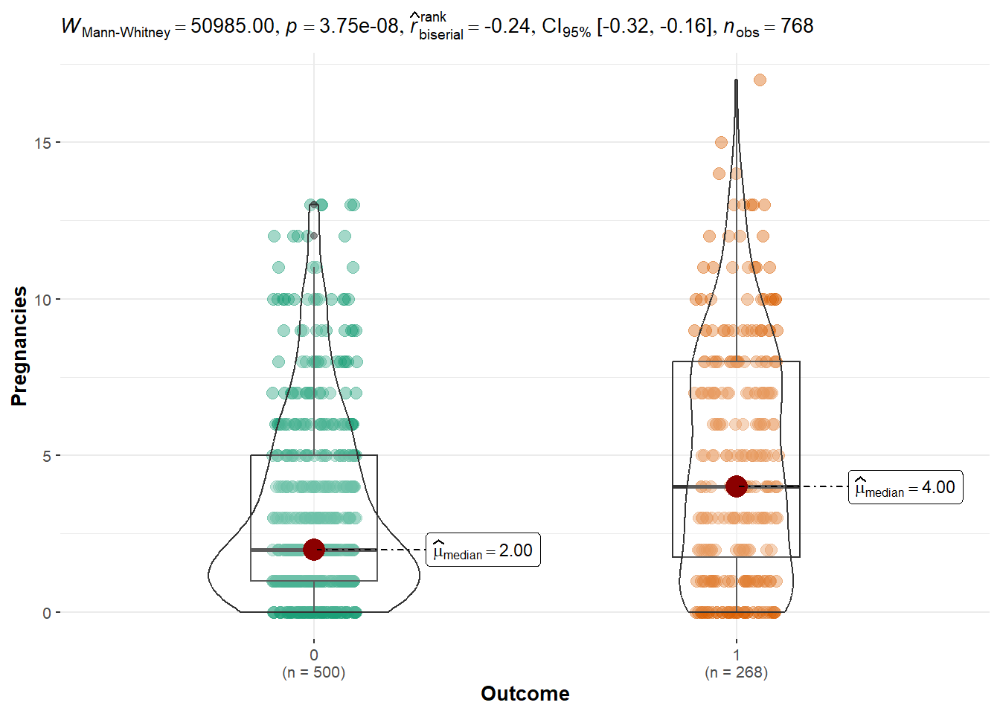
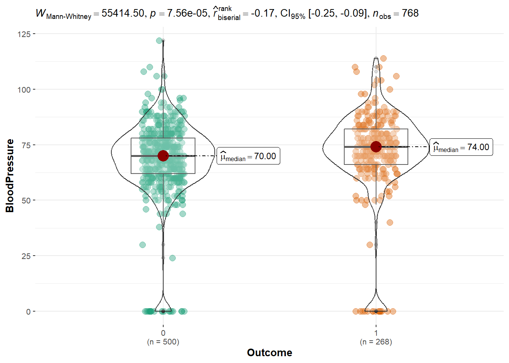
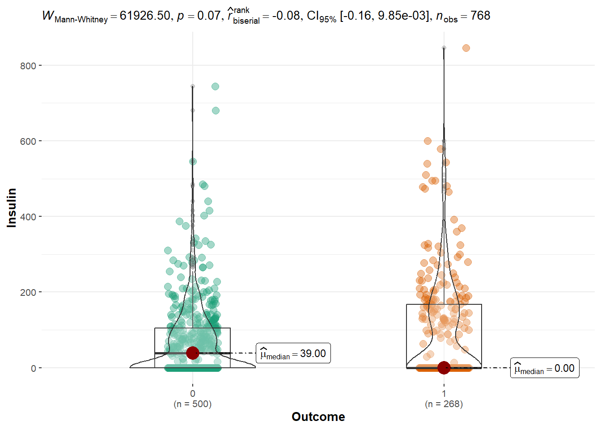
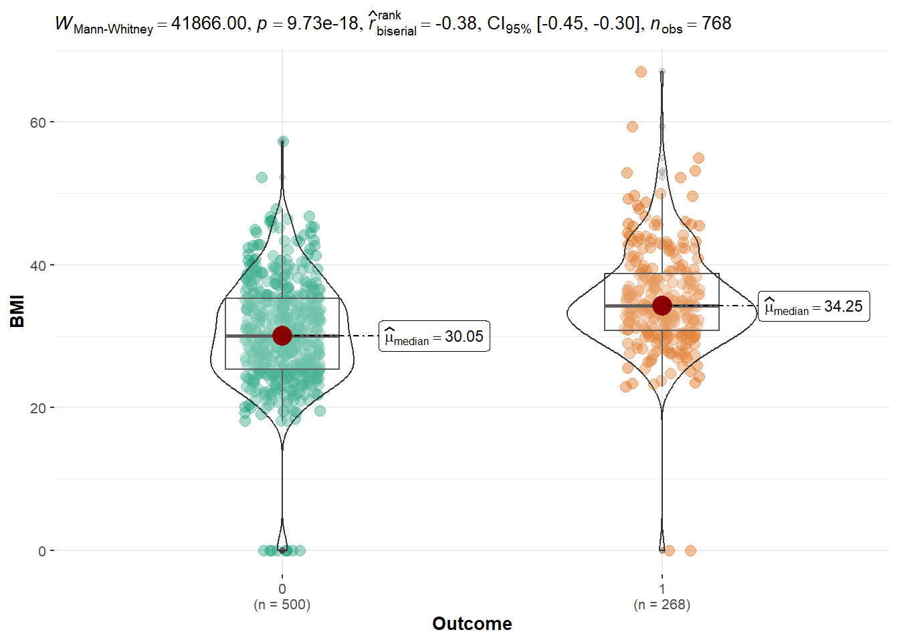
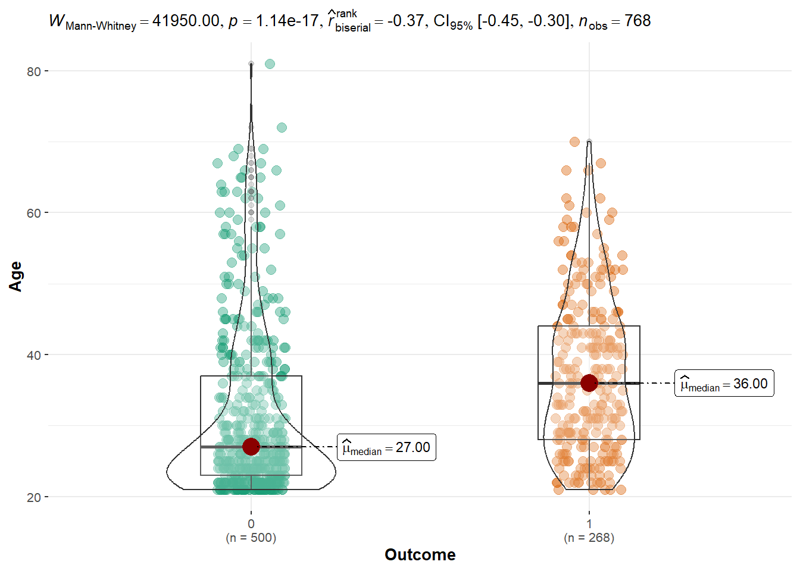
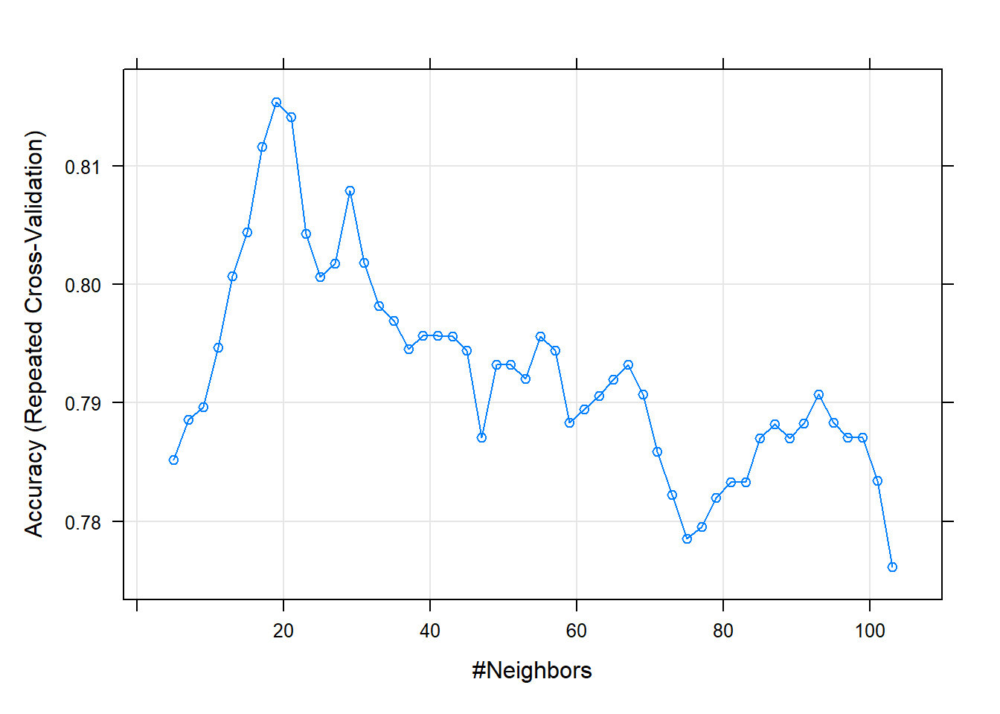

Este sería un ejemplo de examen El siguiente conjunto de datos, consiste en predecir a pacientes basandonos en datos clínicos, si puede padecer diabetes o no.
Antes de cualquier método de clasificación, regresión o lo que sea, necesitamos explorar los datos.
Esto supone exámenes estadísticos inferenciales univariantes, bivariantes y multivariantes.
Pima Indians Diabetes Database
This dataset is originally from the National Institute of Diabetes and Digestive and Kidney Diseases. The objective of the dataset is to diagnostically predict whether or not a patient has diabetes, based on certain diagnostic measurements included in the dataset. Several constraints were placed on the selection of these instances from a larger database. In particular, all patients here are females at least 21 years old of Pima Indian heritage.
Cargamos librerias
#Comenzamos cargando las librerías que seran utilizadas para correr al códigolibrary(ggplot2) #Esta librería sirve para generar los distintos gráficos del programa.library(dplyr) #Esta librería sirve para los data frames y sus distintas funciones.
Attaching package: 'dplyr'
The following objects are masked from 'package:stats':
filter, lag
The following objects are masked from 'package:base':
intersect, setdiff, setequal, union
library(caret) #Esta librería sirve para generar los entrenamientos y evaluaciones de los modelos que se utilizan en el código.
Loading required package: lattice
library(e1071) #Esta librería sirve para generar algoritmos de los modelos Knn, Bayes y árboles de decisiónlibrary(ggstatsplot) #Esta librería sirve para agregar estadíticas a los grafícos como un descripción de los intevalor, p_value, entre otros.
You can cite this package as:
Patil, I. (2021). Visualizations with statistical details: The 'ggstatsplot' approach.
Journal of Open Source Software, 6(61), 3167, doi:10.21105/joss.03167
Cargamos los datos
datos <-read.csv("./datos/diabetes.csv") #Se lee los datos diabetes.cvs y estos son cargados en la variable creada con nombre datoshead(datos) #Se visualiza una matriz de 9 columnas donde se muestra la categoría de los datos y 6 filas donde se encuentran los datos numérico.
Si echamos una búsqueda rápida en google, observamos que el pedigree, es eso, la historia familiar de diabetes. Por lo tanto, aquí podríamos hacer varias cosas ! Entre ellas, regresar los datos a dicha función, o clasificar según esta variable, considerarla o no considerarla.
Para empezar vamos a considerarla para ver la clasificación del modelo knn y bayes.
Miramos las clases de los datos
str(datos) #Esta línea de código nos muestra un resumen con la etiqueta del nombre de las nueve variables, el tipo de datos de cada una y varios datos numéricos de cada una de las observaciones. Adémas de que en este data.frame tambien de observa el número total de variable y sus observaciones.
La única variable que debemos de cambiar es Outcome a factor. Donde 1 es diebetes, y 0 es no diabetes
datos$Outcome <-as.factor(datos$Outcome) #Transformación: Convertimos la variable Outcome en un factor, se realiza esto para que los datos solo puedan ser 1 en el caso de tener diabetes y 0 en el caso de No diabetes.
Análisis estadístico preliminar
dim(datos) #Con la función dim podemos conocer las dimensiones totales del data.frame, como se observa este contiene 9 variables que se encuentra en las columnas y 768 observaciones que se encuentran en las filas.
[1] 768 9
Tenemos 768 filas y 9 columnas. Analicemos primero dos a dos las variables una por una
Histogramas
#En este código graficaremos el histograma de los datos.l.plots <-vector("list",length =ncol(datos)-1) #En esta línea creamos la variables l.plots con el objetivo de hacer una lista vacia, la longitud del vector es ncol de los datos -1 porque se esta quitando o excluyendo la columna Outcome. n1 <-ncol(datos) -1#Esta línea de código almacena en la variable n1 el número de columnas de los datos menos 1 por que tambien se excluye a la columna Outcome.for(j in1:n1){ #Esta línea crea un bucle for que comienza en 1 y se va iterando hasta el valor de n1. h <-hist(datos[,j],plot = F) #En esta variable se crea el histograma con los valores iniciales del bucle. datos.tmp <-data.frame(value=datos[,j],outcome=datos$Outcome) #En esta línea se crea un nuevo Data Frame con los valores de la columna j y los datos de la variable Outcome que tiene valores de 0 y 1. p1 <-ggplot(datos.tmp,aes(value,fill=outcome))+geom_histogram(breaks=h$breaks) +ggtitle(paste("Histogram of", colnames(datos)[j])) #En la variable p1 se crea el objeto con la librería ggplot que contiene el histograma creado con la columna j, sumado las columnas de color de la variable Outcome más el titulo del histograma creado ‘Histograma de’ mas el nombre de la columna j. l.plots[[j]] <- p1 #La variable p1 se guarda en la lista creada al principio l.plots.}
l.plots #Es esta línea se manda a plotear, imprimir o visualizar los histogramas creados.
[[1]]
[[2]]
[[3]]
[[4]]
[[5]]
[[6]]
[[7]]
[[8]]
En lo particular la variable del pedigree se me hace importante, entonces vamos a realizar gráficos de dispersión
En realidad, una buena práctica es correlacionar todas contra todas…
ggscatterstats(datos,BMI,DiabetesPedigreeFunction) #En esta línea de código se crea un gráfico de dispersión utilizando las columnas BMI y DiabetesPedigreeFunction, en donde BMI Va en la escala horizonta y DiabetesPedifreeFunction va en el eje vertical.
Registered S3 method overwritten by 'ggside':
method from
+.gg ggplot2
`stat_bin()` using `bins = 30`. Pick better value with `binwidth`.
`stat_bin()` using `bins = 30`. Pick better value with `binwidth`.
Sin embargo, esto puede ser un proceso tedioso… imaginad hacer 16 gráficas ! podemos condersarlo todo
obj.cor <- psych::corr.test(datos[,1:n1]) #Para acortar las gráficas con esta línea se genera una matriz de correlación para el Data Frame de los datos totales y de esta manera encontrar el p_value y el coeficiente de corelación, para cada par de valores y asi no ir haciendo de dos en dos hasta tener las 16 gráficas.p.values <- obj.cor$p #En el vector p.values se almacena los p valores de la herramienta utilizada en la primera línea corr.test.p.values[upper.tri(p.values)] <- obj.cor$p.adj #Con esta línea se reemplzan los valores de p en el triangulo superior de la matriz con los valores corregidos, estos se encuentran almacenados en obj.cor$p.adj.p.values[lower.tri(p.values)] <- obj.cor$p.adj #De la misma manera que la línea anterior se reemplazan los valores ahora se lo realiza en el triangulo inferior de la matriz.diag(p.values) <-1#Con esta línea se establecen los valores que van en la diagonal de la matriz asignandole un valor de 1.corrplot::corrplot(corr = obj.cor$r,p.mat = p.values,sig.level =0.05,insig ="label_sig") #En esta línea se crea el diagrama de la matriz correlación con opciones para ser personalizado, este ráfico mostrara las correlaciones significativas resaltandolas y las no significativas serán etiquetadas.
Ahora podemos proceder a hacer algo similar, con una serie de comparaciones dos a dos sobre las medias o medianas, sobre cada variable y la variable de interés.
Primero debemos aplicar una regresión lineal con variable dependiente cada variable numérica y por la categórica. Es decir un t.test pero con el fin de ver los residuos, para ver la normalidad de éstos
p.norm <-apply(apply(datos[,1:n1],2,function(x) summary(lm(x~datos$Outcome))$residuals), #Es toda esta línea de código hasta el parentesis, se esta realizando un modelo de regresión lineal a la columna de los datos y con la función summary se crea un resumen de modelo de regresión y con $residuals se saca los residuos del modelo. 2, shapiro.test) # En esta línea se aplica el test de Shapiro Wilk a los residuos obtenidos de la regresión lineal. Con la función apply de principio se aplica este test sobre cada columna pero ahora de los residuos.p.norm #Esta variable almacena los resultados de los valores p del test de Shapiro Wilk para cada columna de residuos, siendo esta variable una matriz que almacena la normalidad de los residuos.
$Pregnancies
Shapiro-Wilk normality test
data: newX[, i]
W = 0.9389, p-value < 2.2e-16
$Glucose
Shapiro-Wilk normality test
data: newX[, i]
W = 0.97511, p-value = 3.726e-10
$BloodPressure
Shapiro-Wilk normality test
data: newX[, i]
W = 0.81468, p-value < 2.2e-16
$SkinThickness
Shapiro-Wilk normality test
data: newX[, i]
W = 0.92004, p-value < 2.2e-16
$Insulin
Shapiro-Wilk normality test
data: newX[, i]
W = 0.77776, p-value < 2.2e-16
$BMI
Shapiro-Wilk normality test
data: newX[, i]
W = 0.94359, p-value < 2.2e-16
$DiabetesPedigreeFunction
Shapiro-Wilk normality test
data: newX[, i]
W = 0.84939, p-value < 2.2e-16
$Age
Shapiro-Wilk normality test
data: newX[, i]
W = 0.88114, p-value < 2.2e-16
Todas las variables son no normales, tal como vemos en los histogramas.
#Código de relacionesggbetweenstats(datos,Outcome,Pregnancies,type ="nonparametric") #Esta línea crea un cuadro estadístico mediante un gráfico para observar la relación que existe entre las variables Outcome y Pregnancies de los datos ingresados y definiendo el tipo método a utilizar en este caso es no paramétrico. Esta gráfica se la conoce con el nombre de violín y se va observando como cada varible interactua con el nivel de las otras variables y su distribución.

ggbetweenstats(datos,Outcome,Glucose,type ="nonparametric") #Se repite el procedimiento de anteriormente realizado en el cuadro de gráfica de relaciones pero en este caso se observa las relaciones de los datos entre las variables Outcome y Glucosa.
ggbetweenstats(datos,Outcome,BloodPressure,type ="nonparametric") #De la misma manera ahora para las variables Outcome y BloodPressure.

ggbetweenstats(datos,Outcome,Insulin,type ="nonparametric") #En este caso se ve la relación entre las variables Outcome y Insulin.

ggbetweenstats(datos,Outcome,BMI,type ="nonparametric") #Ahora se realiza el gráfico para las variables Outcome y BMI.

ggbetweenstats(datos,Outcome,DiabetesPedigreeFunction,type ="nonparametric") #En esta línea de código se saca el gráfico Outcome y DiabetesPedigreeFunction.
ggbetweenstats(datos,Outcome,Age,type ="nonparametric") #De la misma manera ahora para las variables Outcome y Age.

PCA
summary(datos) #En esta línea de código se realiza un resumen para cada una de las variables de los datos, como son minímo, quiartiles, median, mediana,máximo.
Pregnancies Glucose BloodPressure SkinThickness
Min. : 0.000 Min. : 0.0 Min. : 0.00 Min. : 0.00
1st Qu.: 1.000 1st Qu.: 99.0 1st Qu.: 62.00 1st Qu.: 0.00
Median : 3.000 Median :117.0 Median : 72.00 Median :23.00
Mean : 3.845 Mean :120.9 Mean : 69.11 Mean :20.54
3rd Qu.: 6.000 3rd Qu.:140.2 3rd Qu.: 80.00 3rd Qu.:32.00
Max. :17.000 Max. :199.0 Max. :122.00 Max. :99.00
Insulin BMI DiabetesPedigreeFunction Age
Min. : 0.0 Min. : 0.00 Min. :0.0780 Min. :21.00
1st Qu.: 0.0 1st Qu.:27.30 1st Qu.:0.2437 1st Qu.:24.00
Median : 30.5 Median :32.00 Median :0.3725 Median :29.00
Mean : 79.8 Mean :31.99 Mean :0.4719 Mean :33.24
3rd Qu.:127.2 3rd Qu.:36.60 3rd Qu.:0.6262 3rd Qu.:41.00
Max. :846.0 Max. :67.10 Max. :2.4200 Max. :81.00
Outcome
0:500
1:268
pcx <-prcomp(datos[,1:n1],scale. = F) ## escalamos por la variablidad de los datos. Realizamos en esta línea el PCA reduciendo la dimensión del conjunto de datos y da la orden que no escale las variables el PCA.plotpca <-bind_cols(pcx$x,outcome=datos$Outcome) #En plotpca se genera un nuevo Data Frame en el cual se encuentran las puntuaciones del PCA y la columna Outcome.ggplot(plotpca,aes(PC1,PC2,color=outcome))+geom_point() #En esta línea se crea el diagrama de dispersión de los puntajes calculados anteriormente del PCA y estas van a tener el color según Outcome un color para 0 y otro para 1.
Ahora vamos a ver si haciendo unas transformaciones esto cambia. Pero antes debemos de ver las variables sospechosas…
Pero de igual manera podemos escalar a ver si hay algun cambio…
summary(datos) #Summaty es una función que realiza un resumen estadistico en este caso de los datos.
Pregnancies Glucose BloodPressure SkinThickness
Min. : 0.000 Min. : 0.0 Min. : 0.00 Min. : 0.00
1st Qu.: 1.000 1st Qu.: 99.0 1st Qu.: 62.00 1st Qu.: 0.00
Median : 3.000 Median :117.0 Median : 72.00 Median :23.00
Mean : 3.845 Mean :120.9 Mean : 69.11 Mean :20.54
3rd Qu.: 6.000 3rd Qu.:140.2 3rd Qu.: 80.00 3rd Qu.:32.00
Max. :17.000 Max. :199.0 Max. :122.00 Max. :99.00
Insulin BMI DiabetesPedigreeFunction Age
Min. : 0.0 Min. : 0.00 Min. :0.0780 Min. :21.00
1st Qu.: 0.0 1st Qu.:27.30 1st Qu.:0.2437 1st Qu.:24.00
Median : 30.5 Median :32.00 Median :0.3725 Median :29.00
Mean : 79.8 Mean :31.99 Mean :0.4719 Mean :33.24
3rd Qu.:127.2 3rd Qu.:36.60 3rd Qu.:0.6262 3rd Qu.:41.00
Max. :846.0 Max. :67.10 Max. :2.4200 Max. :81.00
Outcome
0:500
1:268
pcx <-prcomp(datos[,1:n1],scale. = T) ## escalamos por la variablidad de los datos, al contrario del anterior código en este caso se da la orden que se escale los datos el PCA.plotpca <-bind_cols(pcx$x,outcome=datos$Outcome) #Repetimos el procedimiento anterior de la creación del Dataframe.ggplot(plotpca,aes(PC1,PC2,color=outcome))+geom_point() #Con esta línea mandamos a gráficar la dispersión de los datos con los colores que da la variable Outcome.
factoextra::fviz_contrib(pcx,"var") #Gráficamos un diagrama de barras de las contribuciones que realizan cada una de las variables a la variable pcx.
Al parecer es la insulina la que está dando problemas
## indices a quitarw <-c(grep("insulin",ignore.case = T,colnames(datos)),ncol(datos)) #En la variable w se guardan los índices que contengan la pablabra insulin.pcx <-prcomp(datos[,-w],scale. = F) ## escalamos por la variablidad de los datos, se da la orden de que el PCA no escale las variables.plotpca <-bind_cols(pcx$x,outcome=datos$Outcome)ggplot(plotpca,aes(PC1,PC2,color=outcome))+geom_point() #Tanto con la línea de plotpaca y está se manda a gráficar sel cuadro de dispersión de los datos coloreandolos con Outcome.
De hecho la insulina, tenía un aspecto raro, como sesgado, ver gráficos de arriba. Vamos a transformala…
datos$Insulin <-log(datos$Insulin+0.05) #A los valores de Insulin se le suma un 0.05 para transformar a estos valores haciendolos más apropiados para una distribución normal y de estos utilizamos la función log() y sacamos su logaritmo.summary(datos) #Resumen de los datos estadisticos para cada variable.
Pregnancies Glucose BloodPressure SkinThickness
Min. : 0.000 Min. : 0.0 Min. : 0.00 Min. : 0.00
1st Qu.: 1.000 1st Qu.: 99.0 1st Qu.: 62.00 1st Qu.: 0.00
Median : 3.000 Median :117.0 Median : 72.00 Median :23.00
Mean : 3.845 Mean :120.9 Mean : 69.11 Mean :20.54
3rd Qu.: 6.000 3rd Qu.:140.2 3rd Qu.: 80.00 3rd Qu.:32.00
Max. :17.000 Max. :199.0 Max. :122.00 Max. :99.00
Insulin BMI DiabetesPedigreeFunction Age
Min. :-2.996 Min. : 0.00 Min. :0.0780 Min. :21.00
1st Qu.:-2.996 1st Qu.:27.30 1st Qu.:0.2437 1st Qu.:24.00
Median : 3.418 Median :32.00 Median :0.3725 Median :29.00
Mean : 1.008 Mean :31.99 Mean :0.4719 Mean :33.24
3rd Qu.: 4.847 3rd Qu.:36.60 3rd Qu.:0.6262 3rd Qu.:41.00
Max. : 6.741 Max. :67.10 Max. :2.4200 Max. :81.00
Outcome
0:500
1:268
pcx <-prcomp(datos[,1:n1],scale. = T) ## escalamos por la variablidad de los datos, se da la orden para que los datos sean escalados del PCA.plotpca <-bind_cols(pcx$x,outcome=datos$Outcome) #Con bind se convina las columnas del PCA con los resultados.ggplot(plotpca,aes(PC1,PC2,color=outcome))+geom_point() #Con las dos últimas líneas de código se grafica el cuadro de dispersión de los datos y se colorea con la variable Outcome.
Cambia ! Esto significa que no hemos quitado la infromacion de la insulina, solamente lo hemos transformado
Es decir, cambia si transformamos los datos…a partir de esto, podemos realizar de nuevo pruebas de diferencia de medianas, pero ahora lo veremos condensado..
datos <-read.csv("./datos/diabetes.csv") #Se lee los datos de diabetes.csv y se los guarda en datos.datos$Outcome <-as.factor(datos$Outcome) #Transformarmos la variable Outcome a un factor, de 1 y 0 a indicadores de diabete o no.datsc <-scale(datos[,-ncol(datos)]) #Se escala los datos menos los de la variable Outcome.
Veamos las distribuciones de nuevo….
l.plots <-vector("list",length =ncol(datos)-1) #En l.plot se crea el vector lista el cual tiene la longitud de -1 de los datos excluyendo a la columna Outcome.n1 <-ncol(datos) -1#n1 va a almacenar al numero total de columnas menos 1 porque se excluye la variable Outcome.for(j in1:n1){ #Se crea un bucle con for que se va a iterar desde j comenzando en 1 hasta el valor de n1. h <-hist(datos[,j],plot = F) #En h se crea el histograma de los datos de la columna especificada por j y el argumento plot=Falso retira el trazado del histograma. datos.tmp <-data.frame(value=datos[,j],outcome=datos$Outcome) #Se crea un data frame en datos.tmp con los valores de la columna que es indicada por j y la variables de resultado. p1 <-ggplot(datos.tmp,aes(value,fill=outcome))+geom_histogram(breaks=h$breaks) +ggtitle(paste("Histogram of", colnames(datos)[j])) #En p1 se crea el histograma con los datos personalizados, el título, los colores son dados por Outcome, los valores y etiquetas de los ejes. l.plots[[j]] <- p1 #se guarda en el vector lista l.plot el histograma creado en p1.}l.plots #Se visualiza la lista de histogramas creados.
[[1]]
[[2]]
[[3]]
[[4]]
[[5]]
[[6]]
[[7]]
[[8]]
Curioso, los valores la insulina, han cambiado por la transformación en valor mas no la distribución, vamos a hacer unos arrelgos…
Al parecer la preñanza esta ligada a una esgala logaritmica de 2 Esto es otra cosa…
datos <-read.csv("./datos/diabetes.csv") #Leemos los datos de diabetes.csv y los guardamos en datos.datos$Outcome <-as.factor(datos$Outcome) #Transformamos los datos de Outcome a factordatos$Pregnancies <-log(datos$Pregnancies+0.5) #Se añade un valor de 0.5 a los datos de Pregnancies y luego se toma el logaritmo de cada unos de los valores.ggplot(datos,aes(Pregnancies))+geom_histogram(breaks =hist(datos$Pregnancies,plot=F)$breaks) #Se crea el histograma para estos valores de la variable Pregnancies, especificando la estética del mismo.
Realizaremos lo mismo con la grosura de la piel
datos <-read.csv("./datos/diabetes.csv") #Leemos los datos de diabetes.csv y los guardamos en datos.datos$Outcome <-as.factor(datos$Outcome) #Se convierte en factor a la columna Outcome.datos$SkinThickness <-log(datos$SkinThickness+0.5) #A los valores de la variable SkinThickness se le suma 0.5 y se saca el valor del logaritmo de ellos.ggplot(datos,aes(SkinThickness))+geom_histogram(breaks =hist(datos$SkinThickness,plot=F)$breaks) #Se crea el histograma de esta variable y se especifica la estética del mismo.
Tenemos algo raro, lo más posible sea por la obesidad…
ggscatterstats(datos,SkinThickness,BMI) #Se crea un diagrama de dispersión de relación entre la variable SkinThickness y BMI.
`stat_bin()` using `bins = 30`. Pick better value with `binwidth`.
`stat_bin()` using `bins = 30`. Pick better value with `binwidth`.
Curioso ! al parecer los datos tienen valores nulos, los cuales solo están en las otras variables que no sean pregnancies. Vamos a quitarlos…
datos <-read.csv("./datos/diabetes.csv") #Se leen los datos de diabetes.csv y se los alamcena en datos. datos[,-c(1,9)] <-apply(datos[,-c(1,9)],2,function(x) ifelse(x==0,NA,x)) #En esta línea se reemplazan los valores del Data Frame que tienen 0 por NA, con el objetivo de eliminar las filas que no sirven para los modelos de entrenamiento automático.datos[,-c(1,9)] <-apply(datos[,-c(1,9)],2,function(x) ifelse(x==0,NA,x)) #En esta línea se reemplazan los valores del datos$Outcome <-as.factor(datos$Outcome) #Se convierten los valores de Outcome a factor es decir se pasa de binario a un indicador de tener o no diabetes.
Vamos a quitar estos valores
datos <- datos[complete.cases(datos),] #Esta fila utiliza el comando complete.cases que devuelve un vector que indica si las filas contienen todos los valores.
Se redujo el data set a 392 observaciones…
table(datos$Outcome) #Esta línea usa el comando table que utiliza un vector y entrega una tabla que en este caso ve cada uno de los valores y los cuenta, como la variable Outcome es binaria devulve el total de 0 y 1.
0 1
262 130
l.plots <-vector("list",length =ncol(datos)-1) #Se creea el vecto lista con una longitud de menos 1 porque se excluye la variable Outcome.n1 <-ncol(datos) -1#n1 guarda el número total de columnas que se utilizara en el bucle. for(j in1:n1){ h <-hist(datos[,j],plot = F) datos.tmp <-data.frame(value=datos[,j],outcome=datos$Outcome) p1 <-ggplot(datos.tmp,aes(value,fill=outcome))+geom_histogram(breaks=h$breaks) +ggtitle(paste("Histogram of", colnames(datos)[j])) l.plots[[j]] <- p1} #Como en los anteriores códigos se utiliza el bucle for para crear el histograma con cada una de las variables, dandole las especificaciones para la estética, los colres y los ejes y su título.l.plots #Gráfica todos los histogramas creados.
[[1]]
[[2]]
[[3]]
[[4]]
[[5]]
[[6]]
[[7]]
[[8]]
Ahora si podemos realizar las transfomraciones
datos <-read.csv("./datos/diabetes.csv") #Leemos los datos de diabetes.csv y los guardamos en datos.datos[,-c(1,9)] <-apply(datos[,-c(1,9)],2,function(x) ifelse(x==0,NA,x)) #Reemplazamos con NA los valores de cero de datos.datos <- datos[complete.cases(datos),] #Elimina las filas de datos que contengan valores que no se encuentren.datos$Outcome <-as.factor(datos$Outcome) #Transforma a factor los valores de la cariable Outcome.datos$Insulin <-log(datos$Insulin) #Se obtiene el logaritmo de la variable Insulin de los datos leidos.datos$Pregnancies <-log(datos$Pregnancies+0.5) #Se suma 0.5 a los valores de la variable Pregnancies y despues se obtiene el logaritmo de cada uno.datos$DiabetesPedigreeFunction <-log(datos$DiabetesPedigreeFunction) #Se obtiene el logaritmo con la función log de la columan DiabetesPedigreeFunction.datos$SkinThickness <-sqrt((datos$SkinThickness)) #Se calcula la raiz cuadrada de la variable SkinThinckness. datos$Glucose <-log(datos$Glucose) #Se obtiene elvalor del logaritmo de Glucosa.datos$Age <-log2(datos$Age) #Se obtiene el logaritmo de base 2 de la variable Age o edad.l.plots <-vector("list",length =ncol(datos)-1) #Se creea el vecto lista con una longitud de menos 1 porque se excluye la variable Outcome.n1 <-ncol(datos) -1#n1 guarda el número total de columnas que se utilizara en el bucle. for(j in1:n1){ h <-hist(datos[,j],plot = F) datos.tmp <-data.frame(value=datos[,j],outcome=datos$Outcome) p1 <-ggplot(datos.tmp,aes(value,fill=outcome))+geom_histogram(breaks=h$breaks) +ggtitle(paste("Histogram of", colnames(datos)[j])) l.plots[[j]] <- p1} #Como en los anteriores códigos se utiliza el bucle for para crear el histograma con cada una de las variables, dandole las especificaciones para la estética, los colres y los ejes y su título.l.plots #Gráfica todos los histogramas creados.
[[1]]
[[2]]
[[3]]
[[4]]
[[5]]
[[6]]
[[7]]
[[8]]
Con las anteriores transformaciones vamos a realizar el PCA de nuevo.
summary(datos) # Realiza el resumen estadisticos de los datos.
Pregnancies Glucose BloodPressure SkinThickness
Min. :-0.6931 Min. :4.025 Min. : 24.00 Min. :2.646
1st Qu.: 0.4055 1st Qu.:4.595 1st Qu.: 62.00 1st Qu.:4.583
Median : 0.9163 Median :4.779 Median : 70.00 Median :5.385
Mean : 0.9590 Mean :4.778 Mean : 70.66 Mean :5.305
3rd Qu.: 1.7047 3rd Qu.:4.963 3rd Qu.: 78.00 3rd Qu.:6.083
Max. : 2.8622 Max. :5.288 Max. :110.00 Max. :7.937
Insulin BMI DiabetesPedigreeFunction Age
Min. :2.639 Min. :18.20 Min. :-2.4651 Min. :4.392
1st Qu.:4.341 1st Qu.:28.40 1st Qu.:-1.3103 1st Qu.:4.524
Median :4.832 Median :33.20 Median :-0.7996 Median :4.755
Mean :4.813 Mean :33.09 Mean :-0.8391 Mean :4.882
3rd Qu.:5.247 3rd Qu.:37.10 3rd Qu.:-0.3754 3rd Qu.:5.170
Max. :6.741 Max. :67.10 Max. : 0.8838 Max. :6.340
Outcome
0:262
1:130
pcx <-prcomp(datos[,1:n1],scale. = T) ## escalamos por la variablidad de los datos, se da la orden para que se escalen los valore y se realice el PCA.plotpca <-bind_cols(pcx$x,outcome=datos$Outcome)ggplot(plotpca,aes(PC1,PC2,color=outcome))+geom_point() #Plotean el diagrama de dispersión de los datos coloreandolos con los valores de Outcome.
Ahora vamos a realizar las pruebas de medianas
p.norm <-apply(apply(scale(datos[,1:n1]),2,function(x) summary(lm(x~datos$Outcome))$residuals),2, shapiro.test)#Como anteriormente se realizo estas líneas de código se utilizan para realizar el tes de Shapiro-Wilk con los residuos de la regresión lineal realizado a la variable outcome. p.norm #Visualiza los valores encontrados del vector p.norm que se guardaron del test Shapiro-Wilk.
$Pregnancies
Shapiro-Wilk normality test
data: newX[, i]
W = 0.95146, p-value = 4.684e-10
$Glucose
Shapiro-Wilk normality test
data: newX[, i]
W = 0.9958, p-value = 0.3813
$BloodPressure
Shapiro-Wilk normality test
data: newX[, i]
W = 0.99011, p-value = 0.009686
$SkinThickness
Shapiro-Wilk normality test
data: newX[, i]
W = 0.99384, p-value = 0.1123
$Insulin
Shapiro-Wilk normality test
data: newX[, i]
W = 0.99054, p-value = 0.0128
$BMI
Shapiro-Wilk normality test
data: newX[, i]
W = 0.97122, p-value = 5.374e-07
$DiabetesPedigreeFunction
Shapiro-Wilk normality test
data: newX[, i]
W = 0.99456, p-value = 0.1796
$Age
Shapiro-Wilk normality test
data: newX[, i]
W = 0.93053, p-value = 1.561e-12
Hemos conseguido la normalidad en solo dos variables, si fueran mas procederiamos con t test pero como no es asi, con test de Wilcoxon
p.norm <-apply(scale(datos[,1:n1]), #Esta línea manda la orden para escalar los valores en el DataFrame. 2,function(x) wilcox.test(x~datos$Outcome)$p.value) #Esta línea de código realiza la prueba de Wilcoxon que es la de suma de rangos de cada valor escalado y los suma con los valores de Outcome.
Observamos que en una primera instancia ahora todas tienen diferencias significativas, esto tenemos que corregir.
p.adj <-p.adjust(p.norm,"BH") #Se realiza un adjuste por el método BM de Benjamin Hochberg sobre los valores almacenados en la variable p.norm y se guardan en el vector p.adj.
Todas siguen siendo significativas, ahora vamos a ver cuales aumentan o disminyuen respecto las otras
datos.split <-split(datos,datos$Outcome) #Divide en dos grupos a todos los datos, cda grupos para un valor de la variable Outcome.datos.median <-lapply(datos.split, function(x) apply(x[,-ncol(x)],2,median)) #Calcula la mediana para cada uno de los valores de cada grupo.toplot <-data.frame(medianas=Reduce("-",datos.median),p.values=p.adj) #Se crea una gráfica superior del DataFrame en donde se visualizaran las medianas y los p.value.toplot #Visualizamos la tabla.
Ahora Todos los valores son significativos respecto a la obesidad
#El siguiente código realiza la gráfica de corellación que existe entre cada una de las variables con las otras, etiquetando y subrayando los valores que tienen relación y los que no tienen. Adémas dandole una estructura entendible para observar claramente las relaciones que existen, encontrando valores más siginificativos de acuerdo a la obesidad. obj.cor <- psych::corr.test(datos[,1:n1])p.values <- obj.cor$pp.values[upper.tri(p.values)] <- obj.cor$p.adjp.values[lower.tri(p.values)] <- obj.cor$p.adjdiag(p.values) <-1corrplot::corrplot(corr = obj.cor$r,p.mat = p.values,sig.level =0.05,insig ="label_sig")
También podemos observar como cambian las relaciones segun la diabetes
#De la misma forma que el anterior con las siguientes líneas de código encontramos la gráfica de relaciones pero en este caso se encontraran los valores más significativos de acuerdo a diabetes. obj.cor <- psych::corr.test(datos[datos$Outcome==0,1:n1])p.values <- obj.cor$pp.values[upper.tri(p.values)] <- obj.cor$p.adjp.values[lower.tri(p.values)] <- obj.cor$p.adjdiag(p.values) <-1corrplot::corrplot(corr = obj.cor$r,p.mat = p.values,sig.level =0.05,insig ="label_sig")
#Como los dos anteriores, este código realiza un análisis de correlación entre la variables, corrige los valores de p y visualiza la matriz final de relaciones.obj.cor <- psych::corr.test(datos[datos$Outcome==1,1:n1])p.values <- obj.cor$pp.values[upper.tri(p.values)] <- obj.cor$p.adjp.values[lower.tri(p.values)] <- obj.cor$p.adjdiag(p.values) <-1corrplot::corrplot(corr = obj.cor$r,p.mat = p.values,sig.level =0.05,insig ="label_sig")
Es decir, existen correlaciones únicas de la obesidad y no obesidad, y existen otras correlaciones que son debidas a otros factores.
Particion de datos
datos[,1:n1] <-as.data.frame(scale(datos[,-ncol(datos)])) #Escala las variables excepto una de las columnas de los datos.levels(datos$Outcome) <-c("D","N") #Transforma la variable Outcome en factores de dos niveles D y N.train <-sample(nrow(datos),size =nrow(datos)*0.7) #Divide a datos en un grupos de datos de entrenamiento y en otro de evaluación, los datos de entrenamiento al 70% y los de evaluación al 30%.dat.train <- datos[train,] #Guarda los datos de entrenamiento.dat.test <- datos[-train,] #Guarda los datos de prueba.
Modelado
Regresión logística
datos[,1:n1] <-as.data.frame(scale(datos[,-ncol(datos)])) #Escala las variables excepto una de las columnas de los datos.glm.mod <-glm(Outcome ~.,data=dat.train,family ="binomial") #Realiza una regresión logistica a los valores del entrenamiento.prediccion <-as.factor(ifelse(predict(glm.mod,dat.test,type="response")>=0.5,"N","D")) #Esta línea realiza predicciones de los valores del grupo de evaluación.caret::confusionMatrix(prediccion,dat.test$Outcome) #Mediante una matriz de confusión evalua el rendimiento del modelo de regresión.
Confusion Matrix and Statistics
Reference
Prediction D N
D 68 18
N 13 19
Accuracy : 0.7373
95% CI : (0.6483, 0.814)
No Information Rate : 0.6864
P-Value [Acc > NIR] : 0.1369
Kappa : 0.3665
Mcnemar's Test P-Value : 0.4725
Sensitivity : 0.8395
Specificity : 0.5135
Pos Pred Value : 0.7907
Neg Pred Value : 0.5937
Prevalence : 0.6864
Detection Rate : 0.5763
Detection Prevalence : 0.7288
Balanced Accuracy : 0.6765
'Positive' Class : D
LASSO
tuneGrid=expand.grid(.alpha=0,.lambda=seq(0, 1, by =0.001)) #Realiza una tabla con los valores para cada valor de datos con alpha=0 y lambda va aumentando de 0.001.trainControl <-trainControl(method ="repeatedcv",number =10,repeats =3,# prSummary needs calculated class,classProbs = T) #Crea un control para la validación cruzada que realiza el modelo con sus especificaciones.model <-train(Outcome ~ ., data = dat.train, method ="glmnet", trControl = trainControl,tuneGrid=tuneGrid,metric="Accuracy") #En estas líneas se va ajustando a una regresión lineal penalizando al grupo de datos de entrenamiento utilizando la tabla con alpha y lambda y el control que se creo. confusionMatrix(predict(model,dat.test[,-ncol(dat.test)]),dat.test$Outcome) #Con la matriz confusión se evalua el rendimiento del modelo.
Confusion Matrix and Statistics
Reference
Prediction D N
D 75 19
N 6 18
Accuracy : 0.7881
95% CI : (0.7033, 0.858)
No Information Rate : 0.6864
P-Value [Acc > NIR] : 0.009468
Kappa : 0.4559
Mcnemar's Test P-Value : 0.016395
Sensitivity : 0.9259
Specificity : 0.4865
Pos Pred Value : 0.7979
Neg Pred Value : 0.7500
Prevalence : 0.6864
Detection Rate : 0.6356
Detection Prevalence : 0.7966
Balanced Accuracy : 0.7062
'Positive' Class : D
Ridge
tuneGrid=expand.grid(.alpha=1,.lambda=seq(0, 1, by =0.0001)) #Realiza una tabla con los valores para cada valor de datos en este caso con alpha=1 y lambda va aumentando de 0.001.trainControl <-trainControl(method ="repeatedcv",number =10,repeats =3,# prSummary needs calculated class,classProbs = T) #Crea un control para la validación cruzada que realiza el modelo con sus especificaciones.model <-train(Outcome ~ ., data = dat.train, method ="glmnet", trControl = trainControl,tuneGrid=tuneGrid,metric="Accuracy") #En estas líneas se va ajustando a una regresión lineal penalizando al grupo de datos de entrenamiento utilizando la tabla y el control.confusionMatrix(predict(model,dat.test[,-ncol(dat.test)]),dat.test$Outcome) #Se predice los valores del modelo y se evalua al mismo con la matriz confusión su rendimiento.
Confusion Matrix and Statistics
Reference
Prediction D N
D 69 17
N 12 20
Accuracy : 0.7542
95% CI : (0.6665, 0.8288)
No Information Rate : 0.6864
P-Value [Acc > NIR] : 0.06607
Kappa : 0.4073
Mcnemar's Test P-Value : 0.45761
Sensitivity : 0.8519
Specificity : 0.5405
Pos Pred Value : 0.8023
Neg Pred Value : 0.6250
Prevalence : 0.6864
Detection Rate : 0.5847
Detection Prevalence : 0.7288
Balanced Accuracy : 0.6962
'Positive' Class : D
Naive Bayes
#Realizamos una nueva partición de datos tanto de entrenamiento como de prueba.datos[,1:n1] <-as.data.frame(scale(datos[,-ncol(datos)])) levels(datos$Outcome) <-c("D","N")train <-sample(nrow(datos),size =nrow(datos)*0.7)dat.train <- datos[train,] #Datos de entrenamiento.dat.test <- datos[-train,] #Datos de prueba.mdl <-naiveBayes(Outcome ~ .,data=dat.train,laplace =0) #En este caso aplicaremos el modelo Naive Bayes, en donde la variable Outcome actua como la variable dependiente y las démas como independientes. En este caso no se utiliza en suavizado de Laplace por eso su valor esta igualado a 0.prediccion <-predict(mdl,dat.test[,-ncol(dat.test)]) #Esta línea realiza la predicción del conjunto de datos de prueba y se utiliza todas las columnas excepto la de Outcome.confusionMatrix(prediccion,dat.test$Outcome) #Con la matriz confusión de evalua el rendimiento del modelo.
Confusion Matrix and Statistics
Reference
Prediction D N
D 59 13
N 23 23
Accuracy : 0.6949
95% CI : (0.6034, 0.7763)
No Information Rate : 0.6949
P-Value [Acc > NIR] : 0.5449
Kappa : 0.3325
Mcnemar's Test P-Value : 0.1336
Sensitivity : 0.7195
Specificity : 0.6389
Pos Pred Value : 0.8194
Neg Pred Value : 0.5000
Prevalence : 0.6949
Detection Rate : 0.5000
Detection Prevalence : 0.6102
Balanced Accuracy : 0.6792
'Positive' Class : D
lambda_use <-min(model$finalModel$lambda[model$finalModel$lambda >= model$bestTune$lambda]) #Se encuentra el valor más pequeño del vector. position <-which(model$finalModel$lambda == lambda_use) # En esta línea se encuentra el índice del valor más pequeño del vector que debe ser mayo o igual a model$bestTune$lambda.featsele <-data.frame(coef(model$finalModel)[, position]) #Esta línea crea un objeto que contiene los coeficientes del modelo ajustado.
rownames(featsele)[featsele$coef.model.finalModel....position.!=0] #Con esta línea se selecciona los coeficiente que sean diferentes de cero y entrega la características más importantes para este ajuste del modelo.
mdl.sel <-naiveBayes(Outcome ~ Insulin+Glucose+DiabetesPedigreeFunction+Age,data = dat.train) #Se utiliza el modelo Naive Byes para ajustar los datos, siendo Outcome la variables dependiente y las démas independientes.prediccion <-predict(mdl.sel,dat.test[,-ncol(dat.test)]) #Predecimos los valores del modelo de todas las columnas excepto la de Outcome.confusionMatrix(prediccion,dat.test$Outcome) #Con la matriz confusión evaluamos el rendimiento del modelo.
Confusion Matrix and Statistics
Reference
Prediction D N
D 60 10
N 22 26
Accuracy : 0.7288
95% CI : (0.6392, 0.8065)
No Information Rate : 0.6949
P-Value [Acc > NIR] : 0.24421
Kappa : 0.4151
Mcnemar's Test P-Value : 0.05183
Sensitivity : 0.7317
Specificity : 0.7222
Pos Pred Value : 0.8571
Neg Pred Value : 0.5417
Prevalence : 0.6949
Detection Rate : 0.5085
Detection Prevalence : 0.5932
Balanced Accuracy : 0.7270
'Positive' Class : D
KNN
library(ISLR) #Esta librería se utiliza porque tiene algunas funciones que funcionan para el entrenamiento de knn.library(caret) #Esta librería igual que la anterior tienen funciones que se utilizan para el entrenamiento de este modelo.set.seed(400) #Se determina una semilla para evitar que los resultados no sean erroneos.ctrl <-trainControl(method="repeatedcv",repeats =3) #,classProbs=TRUE,summaryFunction = twoClassSummary) #Se crea un objeto de control en donde se utiliza como método repeatedcv esto significa que la validación cruzada se realizará 10 veces con tres repeticiones.knnFit <-train(Outcome ~ ., data = dat.train, method ="knn", trControl = ctrl, preProcess =c("center","scale"), tuneLength =50) #Se establece el modelo de ajuste que en este caso es knn que es el modelo de k vecinos más cercanos.#Output of kNN fitknnFit #Se vusualizara los valores predecidos por el modelo. Tanto de k, el Accuracy y los valores de kappa.
plot(knnFit) #Se crea la gráfica de knnFit que fue el objeto creado para el modelo knn.

knnPredict <-predict(knnFit,newdata = dat.test[,-ncol(dat.test)] ) #Esta línea de código realiza la predicción utilizando el modelo knn en los datos de prueba y estos son guardados en knnPredict.#Get the confusion matrix to see accuracy value and other parameter valuesconfusionMatrix(knnPredict, dat.test$Outcome ) #Se imprime la matriz confusión para este modelo.
Confusion Matrix and Statistics
Reference
Prediction D N
D 67 20
N 15 16
Accuracy : 0.7034
95% CI : (0.6123, 0.7839)
No Information Rate : 0.6949
P-Value [Acc > NIR] : 0.4654
Kappa : 0.2721
Mcnemar's Test P-Value : 0.4990
Sensitivity : 0.8171
Specificity : 0.4444
Pos Pred Value : 0.7701
Neg Pred Value : 0.5161
Prevalence : 0.6949
Detection Rate : 0.5678
Detection Prevalence : 0.7373
Balanced Accuracy : 0.6308
'Positive' Class : D
library(caret) #Librería que contiene varias funciones para el modelo.datos <-read.csv("./datos/diabetes.csv") #Leemos los datos de diabete.csv y los guardamos en datos.datos$Outcome <-as.factor(datos$Outcome) #Convertimos la variable Outcome en factordatos[,1:n1] <-as.data.frame(scale(datos[,-ncol(datos)])) #Escalamos los datos del DataFramelevels(datos$Outcome) <-c("D","N") #Se cambia lo niveles de la variable Outcome por D y N.train <-sample(nrow(datos),size =nrow(datos)*0.7) #Se parten los datos.dat.train <- datos[train,] #Datos de entrenamiento.dat.test <- datos[-train,] #Datos de Prueba.set.seed(1001) #Se siembra la semilla.ctrl<-trainControl(method="repeatedcv",number=10,classProbs =TRUE,summaryFunction = twoClassSummary) #Se realiza un objeto control el cual realizara la validación cruzada 10 veces con 3 pliegues cada uno.plsda<-train(x=dat.train[,-ncol(datos)], # spectral datay=dat.train$Outcome, # factor vectormethod="pls", # pls-da algorithmtuneLength=10, # number of componentstrControl=ctrl, # ctrl contained cross-validation optionpreProc=c("center","scale"), # the data are centered and scaledmetric="ROC") # metric is ROC for 2 classesplsda
Partial Least Squares
537 samples
8 predictor
2 classes: 'D', 'N'
Pre-processing: centered (8), scaled (8)
Resampling: Cross-Validated (10 fold, repeated 1 times)
Summary of sample sizes: 483, 484, 483, 483, 483, 483, ...
Resampling results across tuning parameters:
ncomp ROC Sens Spec
1 0.8113961 0.8558824 0.5298246
2 0.8276869 0.8904202 0.5666667
3 0.8292806 0.8845378 0.5771930
4 0.8288250 0.8875630 0.5771930
5 0.8306207 0.8875630 0.5824561
6 0.8307710 0.8875630 0.5771930
7 0.8307710 0.8875630 0.5771930
ROC was used to select the optimal model using the largest value.
The final value used for the model was ncomp = 6.
prediccion <-predict(plsda,newdata = dat.test[,-ncol(datos)]) #Se realiza una predicción utilizando el método plsda en los datos de prueba.confusionMatrix(prediccion,dat.test$Outcome) #Se muestra la matriz final del método
Confusion Matrix and Statistics
Reference
Prediction D N
D 128 37
N 24 42
Accuracy : 0.7359
95% CI : (0.6741, 0.7916)
No Information Rate : 0.658
P-Value [Acc > NIR] : 0.006761
Kappa : 0.3891
Mcnemar's Test P-Value : 0.124430
Sensitivity : 0.8421
Specificity : 0.5316
Pos Pred Value : 0.7758
Neg Pred Value : 0.6364
Prevalence : 0.6580
Detection Rate : 0.5541
Detection Prevalence : 0.7143
Balanced Accuracy : 0.6869
'Positive' Class : D
Si tuneamos lambda
datos <-read.csv("./datos/diabetes.csv") #Leemos los datos de diabetes.csv.datos$Outcome <-as.factor(datos$Outcome) #Se convierte en factor a los valores de Outcome. levels(datos$Outcome) <-c("D","N") #Se cambia los niveles de Outcome por D y N.train <-sample(nrow(datos),size =nrow(datos)*0.7) #Se realiza una partición de datos.dat.train <- datos[train,] #Datos de entrenamiento.dat.test <- datos[-train,] #Datos de prueba.lambda <-seq(0,50,0.1) #Se crea el vector lambda con parámetro para regularización modelo <-naiveBayes(dat.train[,-ncol(datos)],dat.train$Outcome) #En este caso se realiza un ajuste utilizando el modelo de Naive Bayes, en todas las columnas menos la de Outcome. predicciones <-predict(modelo,dat.test[,-ncol(datos)]) #Se realiza la predicción del modelo en los datos de prueba.confusionMatrix(predicciones,dat.test$Outcome)$overall[1] #Se visualiza el valor de accuracy del modelo.
Accuracy
0.7705628
datos <-read.csv("./datos/diabetes.csv") #Leemos los datos de diabetes.csv.datos$Outcome <-as.factor(datos$Outcome) #Se convierte en factor a los valores de Outcome. datos[,1:n1] <-as.data.frame(scale(datos[,-ncol(datos)])) #Realiza la normalización de los datos y los reemplaza dentro de datos.levels(datos$Outcome) <-c("D","N") #Se cambia los niveles de Outcome por D y N.train <-sample(nrow(datos),size =nrow(datos)*0.7) #Partición de los datos de entrenamiento y prueba.dat.train <- datos[train,] #Datos de entrenamiento.dat.test <- datos[-train,] #Datos de pruebalibrary(caret) #Libreríaset.seed(1001) #Plantar la semillactrl<-trainControl(method="repeatedcv",number=10,classProbs =TRUE,summaryFunction = twoClassSummary) #Definición del objeto de control. plsda<-train(x=dat.train[,c(2,5,7,8)], # spectral datay=dat.train$Outcome, # factor vectormethod="pls", # pls-da algorithmtuneLength=10, # number of componentstrControl=ctrl, # ctrl contained cross-validation optionpreProc=c("center","scale"), # the data are centered and scaledmetric="ROC") # metric is ROC for 2 classesprediccion <-predict(plsda,dat.test[,c(2,5,7,8)]) #Predicción del modelo.confusionMatrix(prediccion,dat.test$Outcome) #Matriz confusión del modelo.
Confusion Matrix and Statistics
Reference
Prediction D N
D 136 42
N 9 44
Accuracy : 0.7792
95% CI : (0.7201, 0.831)
No Information Rate : 0.6277
P-Value [Acc > NIR] : 5.532e-07
Kappa : 0.4876
Mcnemar's Test P-Value : 7.433e-06
Sensitivity : 0.9379
Specificity : 0.5116
Pos Pred Value : 0.7640
Neg Pred Value : 0.8302
Prevalence : 0.6277
Detection Rate : 0.5887
Detection Prevalence : 0.7706
Balanced Accuracy : 0.7248
'Positive' Class : D
Finalmente podríamos hacer un análisis de la varianza multivariante
library(vegan) #Librería para análisis multivariante
Loading required package: permute
This is vegan 2.6-4
Attaching package: 'vegan'
The following object is masked from 'package:caret':
tolerance
adonis2(datos[,-ncol(datos)] ~datos$Outcome,method ="euclidean") #El resultado del análisis se mostrará con las estadísticas y los valores p.
Permutation test for adonis under reduced model
Terms added sequentially (first to last)
Permutation: free
Number of permutations: 999
adonis2(formula = datos[, -ncol(datos)] ~ datos$Outcome, method = "euclidean")
Df SumOfSqs R2 F Pr(>F)
datos$Outcome 1 357.8 0.05831 47.434 0.001 ***
Residual 766 5778.2 0.94169
Total 767 6136.0 1.00000
---
Signif. codes: 0 '***' 0.001 '**' 0.01 '*' 0.05 '.' 0.1 ' ' 1
Es decir, como conlusión aunque las variables no pueden detectar la diabetes, siendo variables independientes, si por otro lado las consideramos dependientes de la diabetes.
Es decir, la diabetes es una condición en la que influye en los parámetros, mientras que es menos probable que la diabetes sea la causa de estas alteraciones, con una mejor precisón del 77 por ciento.
Es decir, por un lado tenemos las variables que nos explican solo un 77 porciento de la diabetes, mientras que la condición en sí nos separa más entre la media global.
Se podría investigar más esto. Por ejemplo, se podría hacer una correlación parcial, dada la diabetes, e identificar aquellas variables especificamente relacionadas con esta.